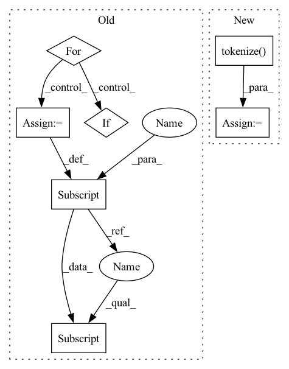

Pattern ID :2439
Before Change
)
final = {}
for k in outputs.keys():
final[k] = inputs[k] + outputs[k]
if k == "input_ids":
final["labels"] = [tokenizer.pad_token_id] * len(inputs["input_ids"]) + outputs[k]
return final
After Change
input_tokens = tokenizer.tokenize(source)[:max_source_length]
// 2. tokenize output tokens
output_tokens = tokenizer.tokenize( target) [:max_target_length]
// 3. concat the inputs
tokens = input_tokens + output_tokens
labels = [tokenizer.pad_token_id] * len(input_tokens) + tokenizer.convert_tokens_to_ids(output_tokens)
input_ids = tokenizer.convert_tokens_to_ids(tokens)
return {
"input_ids": paddle.to_tensor(input_ids, dtype="int64"),In pattern: SUPERPATTERN
Frequency: 3
Non-data size: 7
Instances Fragment ID: 10288824
Project Name: paddlepaddle/paddlenlp
Commit Name: cd9b90e2339a664617b607015d8735e0d430dce2
Time: 2023-03-29
Author: 1435130236@qq.com
File Name: examples/language_model/bloom/finetune_generation.py
M Class Name: AnonimousClass
N Class Name: AnonimousClass
M Method Name: convert_example(6)
N Method Name: convert_example(6)
M Parent Class:
N Parent Class:
M File Name: examples/language_model/bloom/finetune_generation.py
N File Name: examples/language_model/bloom/finetune_generation.py
M Start Line: 68
M End Line: 106
N Start Line: 68
N End Line: 105
Before Change
nwords = len(words)
ids = torch.IntTensor(nwords + 1)
nseq = nseq + 1
for i in range(0, len(words)):
word = words[i]
idx = dict.index(word)
if idx == dict.unk_index and word != dict.unk_word:
nunk = nunk + 1
if word in replaced:
replaced[word] = replaced[word] + 1
else:
replaced[word] = 1
ids[i] = idx
ids[nwords] = dict.eos_index
consumer(ids)
ntok = ntok + len(ids)
return {"nseq": nseq, "nunk": nunk, "ntok": ntok, "replaced": len(replaced)}After Change
with open(filename, "r") as f:
for line in f:
ids = Tokenizer.tokenize( line, dict, tokenize, add_if_not_exist=False, consumer=replaced_consumer)
nseq += 1
consumer(ids)
ntok += len(ids)
return {"nseq": nseq, "nunk": sum(replaced.values()), "ntok": ntok, "replaced": len(replaced)}
@staticmethod Fragment ID: 10288825
Project Name: kssteven418/i-bert
Commit Name: cab76554bff7f65c1d423fbe6960012b52adaeb0
Time: 2017-10-19
Author: louismartin@fb.com
File Name: fairseq/tokenizer.py
M Class Name: Tokenizer
N Class Name: Tokenizer
M Method Name: binarize(4)
N Method Name: binarize(4)
M Parent Class:
N Parent Class:
M File Name: fairseq/tokenizer.py
N File Name: fairseq/tokenizer.py
M Start Line: 42
M End Line: 64
N Start Line: 45
N End Line: 58
Before Change
)
final = {}
for k in outputs.keys():
final[k] = inputs[k] + outputs[k]
if k == "input_ids":
final["labels"] = [tokenizer.pad_token_id] * len(inputs["input_ids"]) + outputs[k]
return final
After Change
target += tokenizer.eos_token
// 1. tokenize input-tokens
input_tokens = tokenizer.tokenize( source) [:max_source_length]
// 2. tokenize output tokens
output_tokens = tokenizer.tokenize(target)[:max_target_length]
// 3. concat the inputs
tokens = input_tokens + output_tokens
labels = [tokenizer.pad_token_id] * len(input_tokens) + tokenizer.convert_tokens_to_ids(output_tokens)
input_ids = tokenizer.convert_tokens_to_ids(tokens)
return {
"input_ids": paddle.to_tensor(input_ids, dtype="int64"), Fragment ID: 10288821
Project Name: paddlepaddle/paddlenlp
Commit Name: cd9b90e2339a664617b607015d8735e0d430dce2
Time: 2023-03-29
Author: 1435130236@qq.com
File Name: examples/language_model/bloom/finetune_generation.py
M Class Name: AnonimousClass
N Class Name: AnonimousClass
M Method Name: convert_example(6)
N Method Name: convert_example(6)
M Parent Class:
N Parent Class:
M File Name: examples/language_model/bloom/finetune_generation.py
N File Name: examples/language_model/bloom/finetune_generation.py
M Start Line: 68
M End Line: 106
N Start Line: 68
N End Line: 105